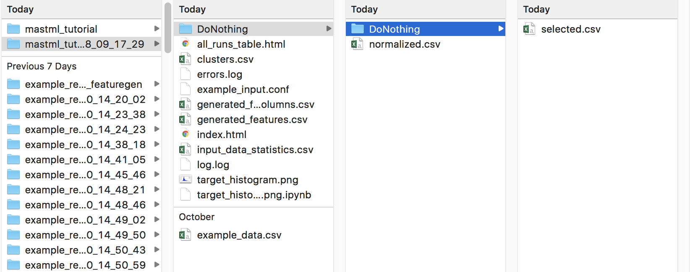

Your first MAST-ML run¶
It’s time to conduct your very first MAST-ML run! First, we will set up the most basic input file, which will only import your data and input file, and do nothing else except copy the input files to the results directory and output a basic histogram of the target data. Open the example_input.conf file (or create your own new file), and write the following in your input file:
Example:
[GeneralSetup]
input_features = Auto
target_feature = Reduced barrier (eV)
randomizer = False
metrics = Auto
not_input_features = Host element, Solute element, predict_Pt
The General Setup section contains high-level control about how your input data file is parsed. Additional details of each parameter can be found in the MAST-ML Input File section in this documentation. Briefly, setting “input_features” to “Auto” will automatically assign all columns to be part of the X feature matrix, except those that are associated with target_feature or not_input_features. The option “randomizer” will shuffle all of your y-data, which can be useful for running a “null” test. The “metrics” option is used to denote which metrics to eventually evaluate your models on, such as mean_absolute_error. Using “Auto” provides a catalogue of standard metrics which is generally sufficient for many problems. Finally, the “not_input_features” field is used to denote any feature columns you don’t want to use in fitting. If some columns contain text notes, these will need to be added here too.
There are two ways to execute a MAST-ML run. The first is to run it via a Terminal or IDE command line by directly calling the main MAST-ML driver module. Here, the python -m (for module) command is invoked on the mastml.masml_driver module, and the paths containing the input file and data file are passed in. Lastly, the argument -o (for output) is used together with the path to put all results files and folders.
Example:
python3 -m mastml.mastml_driver tests/conf/example_input.conf tests/csv/example_data.csv -o results/mastml_tutorial
The second way is to run MAST-ML through a Jupyter notebook by importing mastml and running the mastml_driver main() method and supply the paths to the input file, data file
Example:
import mastml_driver
conf_path = 'tests/conf/example_input.conf'
data_path = 'tests/conf/example_data.csv'
results_path = 'results/mastml_tutorial'
mastml_driver.main(conf_path, data_path, results_path)
Let’s examine the output from this first run. Below is a screenshot of a Mac directory output tree in the results/mastml_tutorial folder. Note that you can re-use the same output folder name, and the date and time of the run will be appended so no work will be lost. Each level of the directory tree corresponds to a step in the general supervised learning workflow that MAST-ML uses. The first level is general data input and feature generation, the second level is numerical manipulation of features, and the third level is selection of features. Since we did not do any feature manipulation in this run, the output selected.csv, normalized.csv and generated_features.csv are all the same, and are the same file as the copied input data file, example_data.csv. In the main directory tree, there is also a log.log and errors.log file, which summarize the inner details of the MAST-ML run and flag any errors that may have occurred. There are two .html files which provide very high-level summaries of data plots and file links that may be of interest, to make searching for these files easier. Finally, there is some generated data about the statistics of your input target data. A histogram named target_histogram.png is created, and basic statistical summary of your data is saved in the input_data_statistics.csv file.
